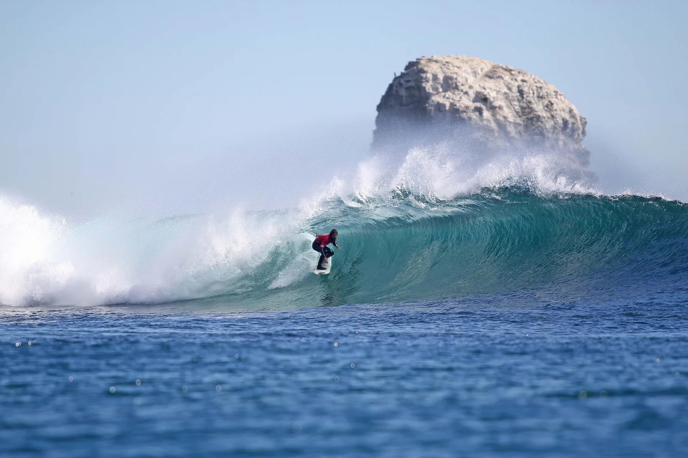

Punta de Lobos — Pichilemu
Chili · surf

Spot emblématique du Chili : une gauche puissante sous des falaises spectaculaires, sanctuaire de surf protégé.
- Lieu
- Chili
- Niveau
- Expert
- Activités
- surf
- Type d'eau
- Mer / océan
- Coordonnées
- -34.42, -72.04 (position approximative du secteur)
Dangers à connaître
- Houle puissante.
- Rochers et falaises.
Le conseil d'Ocean Buddy
Belle gauche de gros ; eau froide et entrée technique par les rochers.
Ouvrir dans Ocean Buddy Télécharger sur l'App Store
Source : Description historique Ocean Buddy · vérification externe en attente.